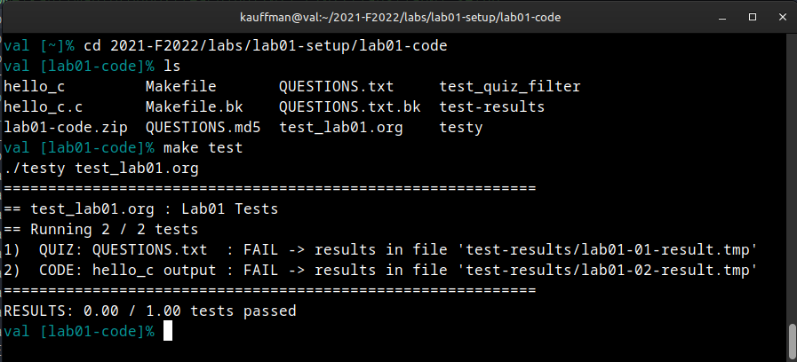
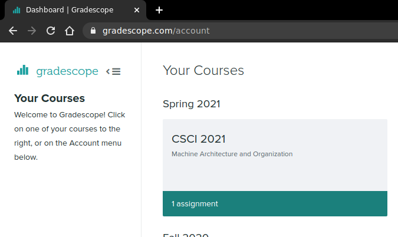
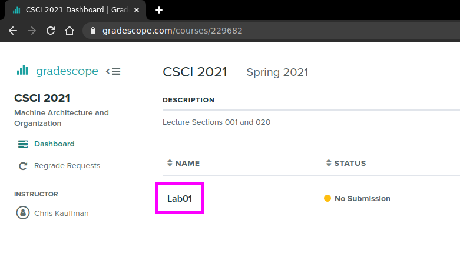
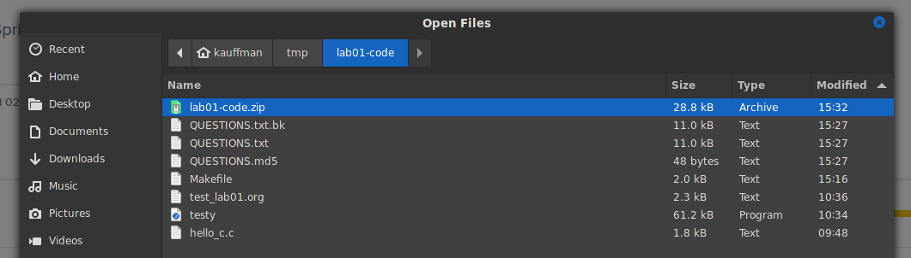
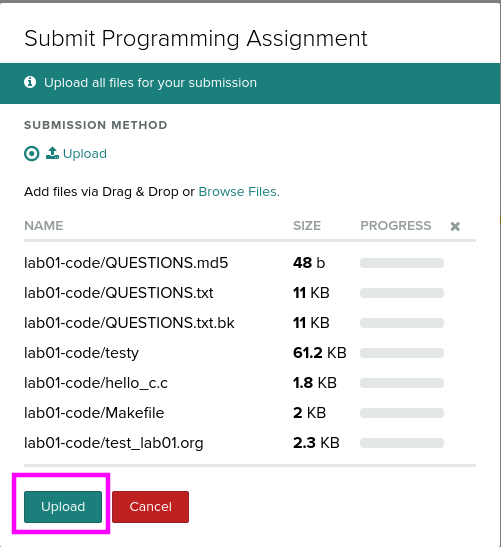
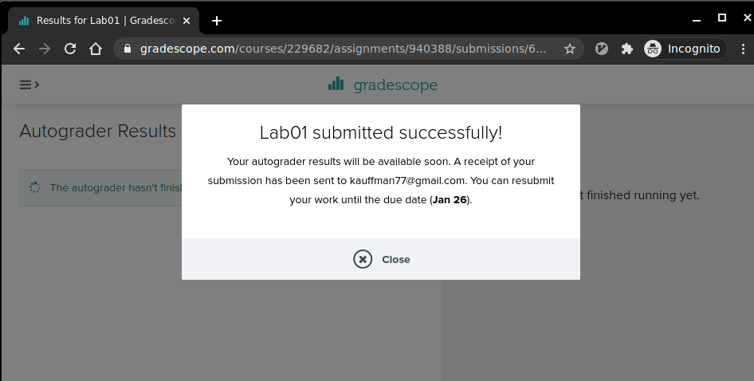
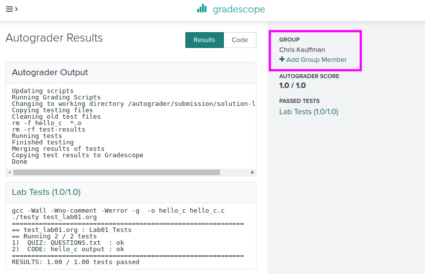
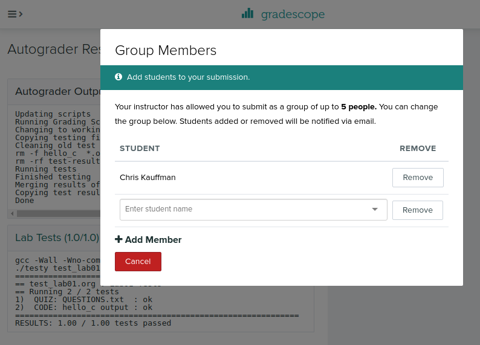

CSCI 2021 Lab01: Basic Setup
- Due: 11:59pm Tue 24-Jan-2023 on Gradescope
- Approximately 0.83% of total grade
CODE DISTRIBUTION: lab01-code.zip
- Download the code distribution
- See further setup instructions below
Walkthrough Video: https://youtu.be/jpqaqMsazhk
CHANGELOG: Empty
1 Rationale
This lab will introduce students to the basic UNIX programming environment which will be used throughout the course. Staff will be on hand to help students set up their environment and complete the lab work.
A UNIX environment is needed to complete the exercises and students are encouraged to work through the Accessing Unix/Linux Programming Environments tutorial to get their environment set up.
Grading Policy
Credit for this Lab is earned by completing the exercises here and
submitting a Zip of the work to Gradescope. Students are responsible
to check that the results produced locally via make test are
reflected on Gradescope after submitting their completed
Zip. Successful completion earns 1 Engagement Point.
Lab Exercises are open resource/open collaboration and students are encouraged to cooperate on labs. Students may submit work as groups of up to 5 to Gradescope: one person submits then adds the names of their group members to the submission.
See the full policies in the course syllabus.
2 Codepack
The codepack for this lab is linked at the top of this document. Always download it and unzip/unpack it. It should contain the following files which are briefly described.
| File | Use | Description |
|---|---|---|
QUESTIONS.txt |
EDIT | Questions to answer: fill in the multiple choice selections in this file. |
hello.c |
EDIT | C file to; edit it to complete for testing |
QUESTIONS.txt.bk |
Backup | Backup copy of the original file to help revert if needed |
Makefile |
Build | Enables make test and make zip |
test-lab01.org |
Testing | Automated tests for this lab |
test_quiz_filter |
Testing | Filter to extract answers from Questions file, used in testing |
testy |
Testing | Test running scripts |
3 Setup
- Staff will briefly survey these instructions and then ask students to form groups to work on the lab exercises. Take this as an opportunity to meet some classmates: having a community of support makes any class easier to handle
- You are NOT required to work in a group but many students find it helpful to form some connections to help them throughout the semester and Labs are a place you might do that.
- Find out if group members complement you: if they have the same questions, are using a similar platform (Windows/Mac), listen to you when you talk about something, or generally seem friendly, it's likely you can help each other. Consider swapping contact information to work again in the future.
- Spend some time Getting access to a Unix Environment using this tutorial Accessing Unix/Linux Programming Environments. *Request help from Staff if you are having trouble with your environment*. If you are in a hurry, just use https://csel-wb28-01.cselabs.umn.edu or Vole which will give a Unix environment in the web browser.
4 Overview of Labwork
- If at any point you become confused by what to do next ask for help from your labmates or course staff.
Download the
lab01-code.zipfile linked at the top of this document into your Unix environment and unzip it. In most UNIX environments you can use the terminal command> unzip lab01-code.zip
to accomplish this. A number of files will be created in a the new folder
lab01-code/.- Find and open the
QUESTIONS.txtfile in a text editor which contains further instructions on what to do. There are several asks to play with basic UNIX commands. Execute the commands indicated and observer their results. Some parts of the text file are marked with
QUESTIONand have multiple choices. Mark the correct response as follows:QUESTION: Which of these is correct? - ( ) This is a wrong answer - ( ) This is also wrong - (X) This is the correct answer - ( ) And another wrong answer
When you have filled in all your answers, check them via the provided
makecommand. Open a Unix Terminal Emulator which will be a program calledTerminaland/or have an icon linkThis will open a terminal emulator and allow commands to be typed in such as in the following session. You may need to use the
cd <folder>command to change into the specific folder where your lab code exists.
In the terminal, type the command
> make test-quiz
which check the quiz questions for correctness. If needed, make some changes and try again.
Some activities will be based on writing CODE and marked as such. These will involve editing a file like the provided
hello.cto complete it. Once you have completed the code necessary check it via a terminal using the command> make test-code
You can run tests for both the QUIZ and CODE sections with
> make test
which you should always do prior to submitting
When you complete the QUIZ and CODE questions, create a zip of your lab work via
> make zip
and then upload the file to Gradscope as per the instructions in the last section.
5 QUESTIONS.txt File Contents
Below are the contents of the QUESTIONS.txt file for the lab.
Follow the instructions in it to complete the QUIZ and CODE questions
for the lab.
__________________
LAB 01 QUESTIONS
__________________
Lab Instructions
================
Follow the instructions below to experiment with topics related to
this lab.
- For sections marked QUIZ, fill in an (X) for the appropriate
response in this file. Use the command `make test-quiz' to see if
all of your answers are correct.
- For sections marked CODE, complete the code indicated. Use the
command `make test-code' to check if your code is complete.
- DO NOT CHANGE any parts of this file except the QUIZ sections as it
may interfere with the tests otherwise.
- If your `QUESTIONS.txt' file seems corrupted, restore it by copying
over the `QUESTIONS.txt.bk' backup file.
- When you complete the exercises, check your answers with `make test'
and if all is well, create a zip file with `make zip' and upload it
to Gradescope. Ensure that the Autograder there reflects your local
results.
- IF YOU WORK IN A GROUP only one member needs to submit and then add
the names of their group.
Programming Environment
=======================
The course will require you to do some programming in a Unix/Linux
environment and the course staff have prepared a guide to getting
access to such an environment here:
<https://www-users.cs.umn.edu/~kauffman/tutorials/unix-environment.html>
Discuss with your table-mates in lab (or contemplate on your own) what
environment you will Primarily use and what will be your Backup. You
can pick a method that makes your life easiest, but since you are
going to be writing C and Assembly code and running it, occasionally
on remote machines, make sure to spend some time configuring an
environment that will help you focus on course problems rather than
tech problems.
All students should be aware of the following options for accessing
Unix environments.
QUIZ Lab Machine Remote Access
~~~~~~~~~~~~~~~~~~~~~~~~~~~~~~
One extremely easy way to access lab machines remotely that is
described in some detail in the "Accessing Unix/Linux Programming
Environments" guide is...
- ( ) Buying a second laptop and setting it up as a "dumb terminal" :
whenever it is booted it automatically connects to a remote machine
to mock its interface.
- (X) Connecting to machines in a web browser via FASTX 3: it's as
easy as visiting a lab machine web address like
<https://csel-kh4240-01.cselabs.umn.edu>
- ( ) Adding Linux system call emulation to the Windows or Mac Kernel
through some crafty manipulations of binary files.
- ( ) Actually there are no easy ways to connect to remote lab
machines.
QUIZ VOLE System
~~~~~~~~~~~~~~~~
One easy method to access a Unix Environment is the UMN's VOLE
system. Which of these describes VOLE best?
- ( ) It's a web site that describes Unix commands making it easier to
understand those systems.
- ( ) It's a web interface that gives you a Graphical Unix environment
without needing to install anything.
- ( ) It's a terminal command that allows easy access to the UMN's
computing systems.
- ( ) You know what a vole is, Morty, you know what a VOLE is? It's a,
it's a rodent that mates for life, Morty. This is the chemical
released in the mammal's brain, ...that makes it fall in love.
What's a common complaint among students about VOLE?
- ( ) It doesn't give access to the files that are stored on the CSE
Lab systems
- ( ) It only provides a terminal interface so you need to learn a
terminal text editor.
- ( ) It lags and ssssssssstalls frequently because doing graphics
over the network requires a fast internet connection
- ( ) It is not the opposite of a Mantis.
QUIZ Secure Shell
~~~~~~~~~~~~~~~~~
All recent major platforms (Windows / Mac / Linux) come with the `ssh
/ scp' tools pre-installed.
What does the following command do?
,----
| > ssh kauf0095@atlas.cselabs.umn.edu
`----
- ( ) Silences the user `kauff095' on the machine `atlas' so that user
can no longer type any commands and must reset their password.
- ( ) Opens an unsecure connection to the machine `atlas' for the user
`kauf0095' and allows anyone typing to the command to act as that
user on `atlas' without password verification and without any
encryption of the connection.
- ( ) Opens a secure connection to the machine `atlas' for the user
`kauf0095' and, after verifying a password, opens a terminal/shell
on that machine for further commands.
What does the following command do?
,----
| > scp -r hw01-code/ kauf0095@atlas.cselabs.umn.edu:
`----
- ( ) It copies the directory `hw01-code' recursively to the remote
machine `atlas' for user `kauf0095' allowing the contents of the
entire folder to be moved from the local computer to a different
computer. Password verification is required for user `kauf0095'.
- ( ) It copies the directory `hw01-code' to a new folder name that
starts with `kauf0095@atl...' but uses a more efficient algorithm
than the standard `cp' copy command.
- ( ) It reverses the names of all files in the directory `hw01-code'
and stores the results in a new file named `kauf0095@atla...'
Unix Terminal Basics
====================
Explore the UNIX terminal a bit. Ask for help from a classmate or
Staff member if you don't know how to open a terminal on your system.
Type the below commands in and then indicate what their purpose is.
QUIZ Command Basics - Change ABC to 123
~~~~~~~~~~~~~~~~~~~~~~~~~~~~~~~~~~~~~~~
What does the following command sequence do?
,----
| > cd ~ # A
| > mkdir csci2021 # B
| > cd csci2021 # C
| > ls # D
| > cd .. # E
`----
,----
| - ( ) A. Changes to your home directory/folder
| B. Creates a folder named csci2021
| C. Changes the directory csci2021 to be your home folder
| D. lists the files in the current folder,
| E. changes the directory .. to be your home folder
|
| - ( ) A. Creates a directory/folder named ~ (tilde)
| B. creates a file named csci2021,
| C. creates a second folder csci2021,
| D. lists the files in the current folder,
| E. moves up one folder
|
| - ( ) A. Changes to your home directory/folder,
| B. creates a folder named csci2021
| C. changes into the folder csci2021,
| D. lists the files in the current folder,
| E. moves up one folder
`----
Checking Your Quiz Answers
==========================
To check if your quiz answers are correct, open a terminal and change
into the `lab01-code' directory. Type the command
,----
| > make test-quiz
`----
which will report either success or a failure. The test does not
report WHICH questions are incorrect and if you get stuck, get some
help from a staff member to sort out which of the multiple choice
questions above is incorrect.
CODE in hello_c.c
=================
Open up and examine the program in the file `hello_c.c'. This is a C
program and to see what it in action, you will need to compile and run
it in a terminal. Navigate your terminal to the `lab01-code'
directory. You can use the provided build tools to create the C
program by typing
,----
| > make
`----
This should provide output which runs the `gcc' compiler and creates
the runnable program `hello_c': notices the lack of the `.c'
extension. A session of compiling, running, and testing the program is
below with commentary on the right.
,----
| > make # compile the program 'hello_c'
| gcc -Wall -Wno-comment -Werror -g -o hello_c hello_c.c
|
| > file hello_c # check file type of program
| hello_c: ELF 64-bit LSB pie executable, x86-64, version
|
| > ./hello_c # run compiled program
| Goodbye Python. Goodbye Java.
| ...
|
| > make test-code
| ./testy test_lab01.org 2
| ============================================================
| == test_lab01.org : Lab01 Tests
| == Running 1 / 2 tests
| 2) CODE: hello_c output : FAIL -> results in file 'test-results/lab01-02-result.tmp'
| ============================================================
| RESULTS: 0.00 / 1.00 tests passed
|
|
| ============================================================
| == FAILURE RESULTS
| ============================================================
| (TEST 2) CODE: hello_c output
| COMMENTS:
| Runs the program 'hello_c' which must already be compiled and checks
| ...
`----
As indicated in the comments in `hello_c.c', there are a number of
typos, missing, and extraneous lines printed by the program. To make
the code pass the tests, you will simply need to correct `hello_c.c'
to match the output expected for the test. As the Comments for the
CODE test indicate, failures report differences between the expected
and actual output with symbols between the side-by-side
comparison. These symbols are those used by the comparison program
`diff' and are as follows:
,----
| > means there is an extra ACTUAL line that doesn't match anything in EXPECT
| < means there is a line missing in ACTUAL that is present in EXPECT
| | means the lines match closely but some characters differ
`----
Edit code in `hello_c.c' so that the output matches and testing the
code produces a success:
,----
| > make test-code
| gcc -Wall -Wno-comment -Werror -g -o hello_c hello_c.c
| ./testy test_lab01.org 2
| ============================================================
| == test_lab01.org : Lab01 Tests
| == Running 1 / 2 tests
| 2) CODE: hello_c output : ok
| ============================================================
| RESULTS: 1.00 / 1.00 tests passed
`----
Submitting a Zip for Gradescope
===============================
Once you have your QUIZ answers for the `QUESTIONS.txt' file correct
and your CODE completed, do one final check via `make test':
,----
| > make test
| ./testy test_lab01.org
| ============================================================
| == test_lab01.org : Lab01 Tests
| == Running 2 / 2 tests
| 1) QUIZ: QUESTIONS.txt : ok
| 2) CODE: hello_c output : ok
| ============================================================
| RESULTS: 1.00 / 1.00 tests passed
`----
If everything looks ok, you are ready to submit. Do so by creating a
zip file via `make zip'
,----
| > make zip
| rm -f hello_c *.o
| rm -rf test-results
| rm -f lab01-code.zip
| cd .. && zip "lab01-code/lab01-code.zip" -r "lab01-code"
| zip warning: name not matched: lab01-code/test_lab01.org~
| adding: lab01-code/ (stored 0%)
| adding: lab01-code/QUESTIONS.md5 (stored 0%)
| adding: lab01-code/QUESTIONS.txt (deflated 61%)
| adding: lab01-code/QUESTIONS.txt.bk (deflated 61%)
| adding: lab01-code/testy (deflated 73%)
| adding: lab01-code/hello_c.c (deflated 51%)
| adding: lab01-code/Makefile (deflated 60%)
| adding: lab01-code/test_lab01.org (deflated 47%)
| Zip created in lab01-code.zip
`----
The zip file named `lab01-code.zip' should be uploaded to Gradescope
under the `Lab01' assignment. Once uploaded, the same `make test'
check will be run and you should verify its success as this will earn
you your lab Engagement Point (1% of your overall grade).
IF YOU ARE WORKING IN A GROUP: only one student needs to upload the
Zip file and can add up to 4 other students (groups of 5) to the
submission who will also receive credit for the lab work.
6 Submission
6.1 Check via make test
Once you have your QUIZ answers for the QUESTIONS.txt file correct and your CODE completed, do one final check via make test:
> make test ./testy test_lab01.org ============================================================ == test_lab01.org : Lab01 Tests == Running 2 / 2 tests 1) QUIZ: QUESTIONS.txt : ok 2) CODE: hello_c output : ok ============================================================ RESULTS: 1.00 / 1.00 tests passed
6.2 Create a Zip
If everything looks ok, you are ready to submit. Do so by creating a zip file via make zip
> make zip rm -f hello_c *.o rm -rf test-results rm -f lab01-code.zip cd .. && zip "lab01-code/lab01-code.zip" -r "lab01-code" zip warning: name not matched: lab01-code/test_lab01.org~ adding: lab01-code/ (stored 0%) adding: lab01-code/QUESTIONS.md5 (stored 0%) adding: lab01-code/QUESTIONS.txt (deflated 61%) adding: lab01-code/QUESTIONS.txt.bk (deflated 61%) adding: lab01-code/testy (deflated 73%) adding: lab01-code/hello_c.c (deflated 51%) adding: lab01-code/Makefile (deflated 60%) adding: lab01-code/test_lab01.org (deflated 47%) Zip created in lab01-code.zip
6.3 Submitting to Gradescope
The zip file named lab01-code.zip should be uploaded to Gradescope under the Lab01 assignment. Once uploaded, the same make test check will be run and you should verify its success as this will earn you your lab Engagement Point (1% of your overall grade).
The following pictures illustrate how to submit the code.







Make sure to check that your submission passes tests online; otherwise you'll lose out on your Engagement Point. You can resubmit as many times as you wish up to the Lab deadline (usually Tuesday nights).
No late submission are accepted for lab work.
6.4 Adding Group Members
IF YOU ARE WORKING IN A GROUP: only one student needs to upload the Zip file and can add up to 4 other students (groups of 5) to the submission who will also receive credit for the lab work.
The following pictures show where you can add group members AFTER uploading a Zip file.

